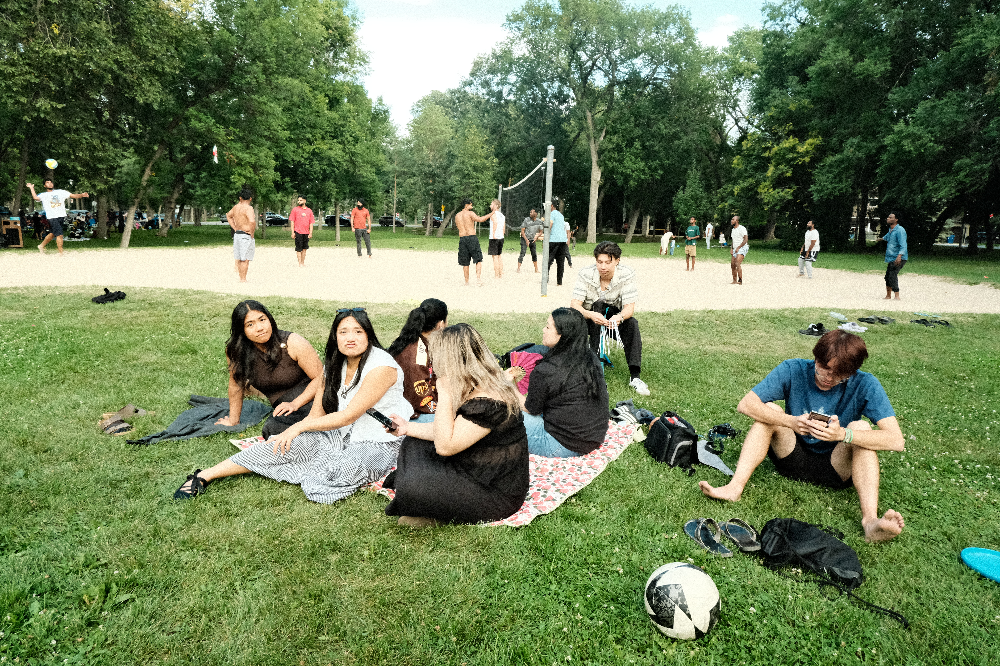

Sunday
Sunday service
Join us for worship at 1:30 PM at 427 Matheson Avenue.
Make room for worship, prayer, and life together. Explore our regular and seasonal gatherings.
Explore gatherings
Contact the church to confirm the current dates, times, and locations before attending.
Join us for worship at 1:30 PM at 427 Matheson Avenue.
Join us for prayer and a devotional at 7 PM, usually at 427 Matheson Avenue. Sometimes we meet in a home; check the weekly announcements.
Discovery Bible Study, young adults, men, women, and youth. Most groups meet in homes or after the Sunday service.
Shared encouragement and relationships grounded in Christ.
March 28, 2027 at 1:30 PM at 427 Matheson Avenue. On Good Friday we join the Filipino Interchurch Fellowship Winnipeg service.
Our membership path, offered twice a year in late January and May.
6 gatherings
We would love to meet you and help you find your next step.